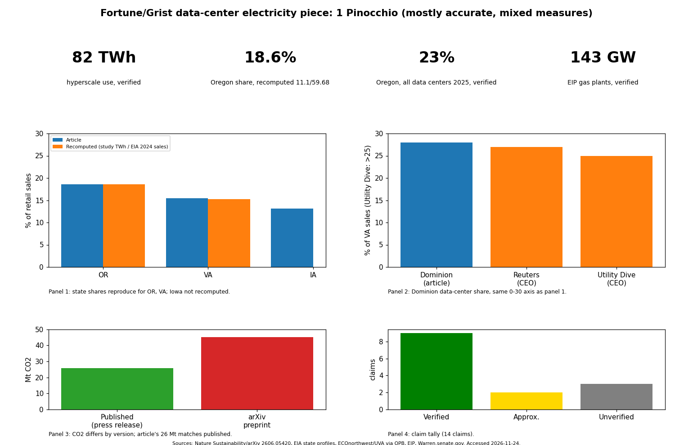

Fact-check: Fortune (Grist) data-center electricity piece, 2026-11-20

Rating: 1 Pinocchio. Core numbers hold, but two different measures are blended
Most figures check out: 403 hyperscale facilities, about 82 TWh (central; range 68-99), Oregon at 23% of 2025 sales (ECOnorthwest/UVA), Oregon 18.6% (I recomputed 11.1 TWh / 59.68 TWh EIA 2024 sales = 18.6%), Virginia ~15% (21 / 138.0 TWh = 15.2%), the EIP 143 GW gas figure, and the Warren/Hawley EIA letter.
- Misleading blend: 23% (all Oregon data centers, 2025) sits beside 18.6% (hyperscale only, 2024-25). They are different universes and years; both are true.
- Unverified: the 3% in 2015 baseline and the "96% of sales growth 2020-2025" claim. I did not open the ECOnorthwest PDF; searches found only "nearly quadrupled since 2020".
- Dominion 28%: Reuters says 27%, CEO at Utility Dive says "more than 25%". Close, but I could not find 28%.
- CO2 26 Mt: matches the published press release (25.7 Mt) but the arXiv preprint gives 45 Mt (37-54). Version/method difference.
- "No federal tracking": true of a mandatory system, but EIA agreed in April 2026 to a mandatory survey after pilots (TX, WA, N. Virginia), so it is incomplete context.
- Not checked: Oregon Dept. of Energy "lacks a policy mechanism" quote; Iowa 13.1% not recomputed.
Caveat: shares are state-level, not causal; hyperscale-only totals understate. Fortune text was read via a summarizing fetch, not verbatim.
Claim table
| Claim | Verdict | Source |
|---|
| 403 hyperscale, 82 TWh, ~2% US | True | arXiv 2606.05420; EurekAlert release |
| 26 Mt CO2 | True per published version; preprint differs | EurekAlert; arXiv |
| Oregon 23% in 2025 | True | OPB 2026-09-17; ECONW |
| Oregon 3% in 2015 | Unverified | - |
| 96% of sales growth 2020-25 | Unverified | - |
| OR 18.6%, VA 15.5%, IA 13.1% | OR, VA reproduce; IA not checked | EIA state profiles; arXiv |
| Dominion 28% | Approximately (27% / >25%) | Reuters; Utility Dive |
| 143 GW gas plants | True (74 plants) | EIP, 2026-07-01 |
| Warren/Hawley urged EIA | True | warren.senate.gov, 2026-03-26 |
| No federal tracking | Needs context | Warren press release 2026-04-15 |
Sources
- https://arxiv.org/html/2606.05420
- https://www.eurekalert.org/news-releases/1150191
- https://www.opb.org/article/2026/09/17/oregon-data-centers-consume-quarter-state-power-report/
- https://www.opb.org/article/2026/11/19/oregon-hyperscale-data-centers/
- https://www.eia.gov/electricity/state/oregon/ and /virginia/
- https://environmentalintegrity.org/news/74-gas-power-plants-proposed-for-u-s-data-centers-could-release-as-much-climate-pollution-as-australia/
- https://www.warren.senate.gov/news/press-releases/warren-hawley-secure-mandatory-energy-use-reporting-requirements-for-data-centers/
- Reuters via TradingView; Utility Dive (Dominion)